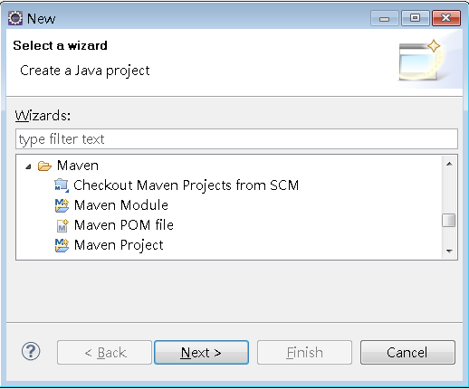
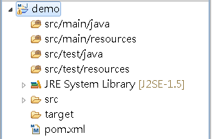
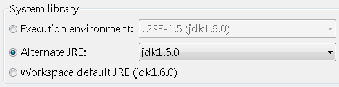
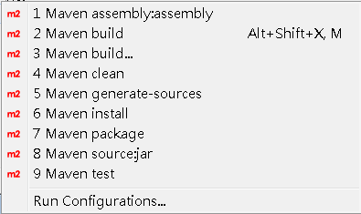
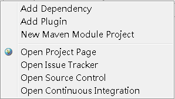
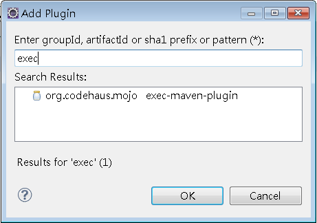

mvn
eclipse:eclipse
這會產生Eclipse專案必須的.classpath與.project檔案，之後你就可以用Eclipse匯入專案了。然 而這樣並不夠，如果你想在Eclipse中執行Maven的相關任務，可以安裝 M2Eclipse，也就是 Eclipse plugins for Maven，安裝plugin的網址是：
安裝完畢後，就有新增Maven Project等選項：

新增專案的過程中，要設定artifactId、groupId等選項：

新增基本的專案後結構如下：

如果你的JRE System Library不是設定為JDK，必須選擇以JDK作為JRE System Library：

在pom.xml上按右鍵執行「Run As」，會看到Maven的執行選項：

在pom.xml上按右鍵執行「Maven」，會看到POM的設定選項：

以「Add plugin」為例，可以搜尋可設定的plugin：

選擇想要設定的plugin後，按下OK後，會在pom.xml中為你建立基本的設定，例如：
...
<build>
<plugins>
<plugin>
<groupId>org.codehaus.mojo</groupId>
<artifactId>exec-maven-plugin</artifactId>
<version>1.2</version>
<configuration></configuration>
</plugin>
</plugins>
</build>
..
<build>
<plugins>
<plugin>
<groupId>org.codehaus.mojo</groupId>
<artifactId>exec-maven-plugin</artifactId>
<version>1.2</version>
<configuration></configuration>
</plugin>
</plugins>
</build>
..
如果是 NetBeans，也可以在 Maven 2.x Module for NetBeans 找到相關的說明。